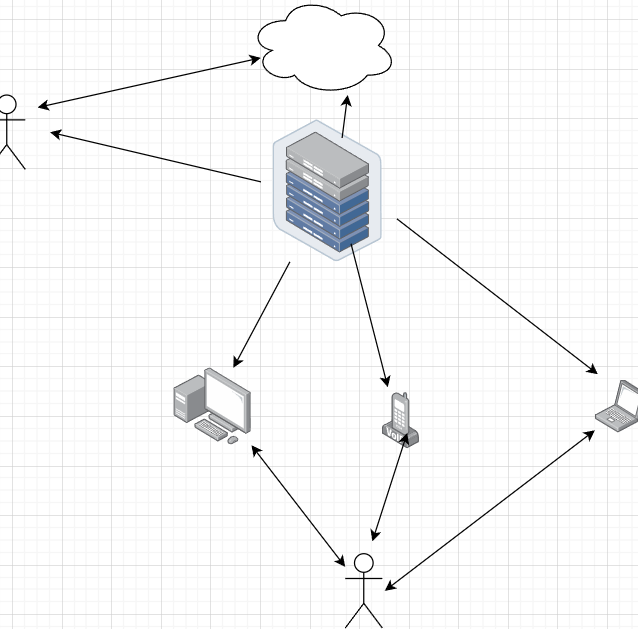

Home
Resume
IT project
Cloud class service platform
Software requirements
Hardware requirements
Name
Details
Software requirements
Windows XP and Upper
Browser
IE 5.0 and Upper or Mozilla, Google Chrome
Database Server
Mysql
Name
Details
Processor
Pentium IV and supra
Hard Drive
40GB
Network
Local area network
Project flow chart

Values and methodology to complete this IT project
Strict sequence and step - by - step process. Emphasize careful requirements gathering, detailed analysis and design, and emphasize the importance of documentation. Clearly define the required items. The product or service must be delivered in accordance with the approved plan, noting the higher level of management of the project. Providing a single standard approach to project management, dividing the process into manageable phases, and focusing on the end product can help manage the learning side while avoiding the inconvenience of a pandemic situation. Improve the efficiency of life and office.